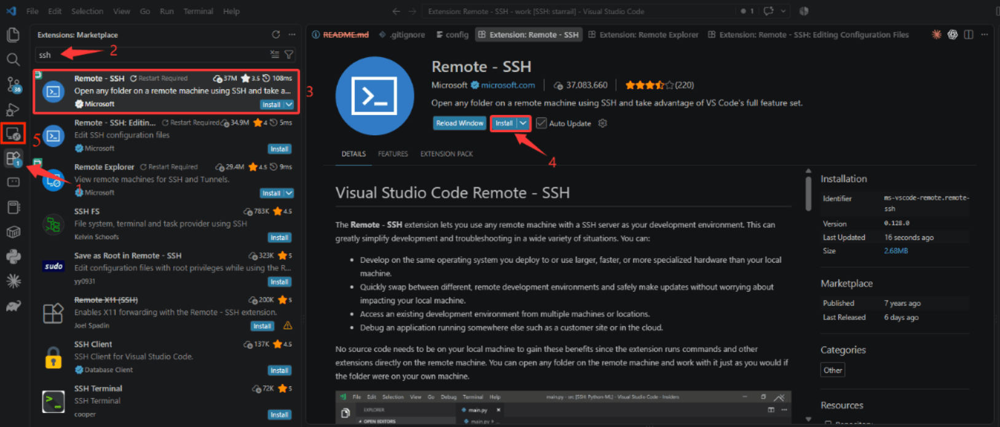
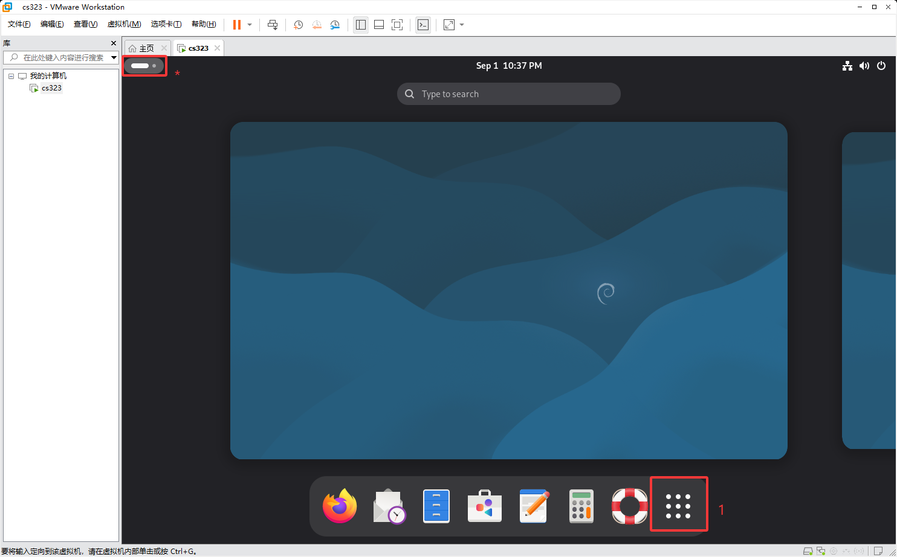
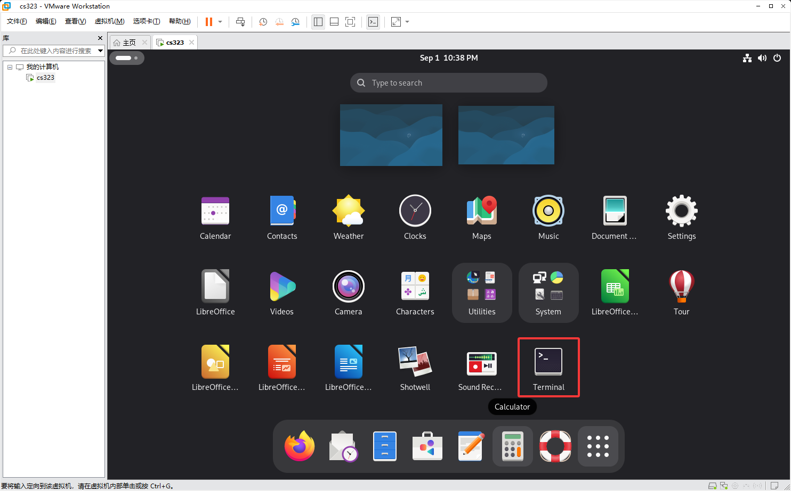
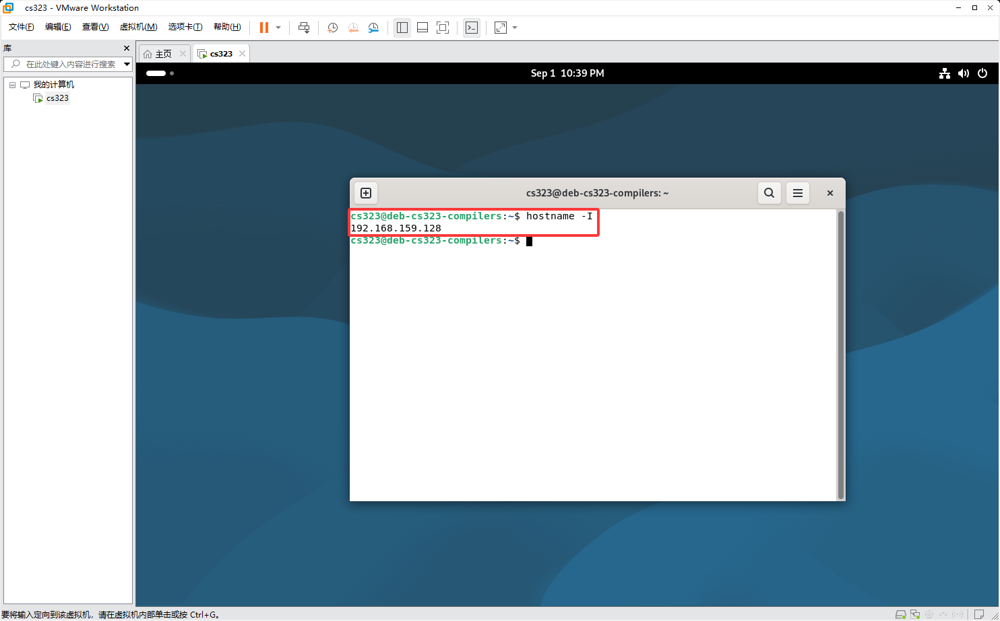
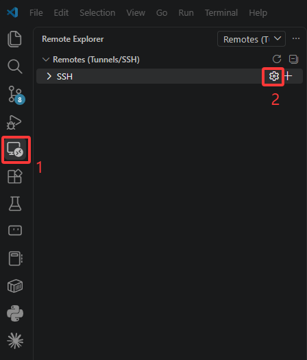
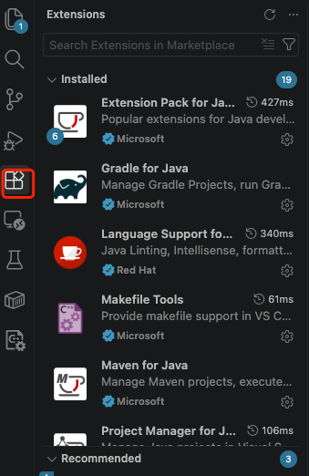
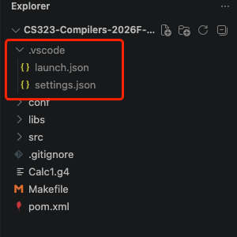
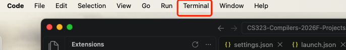
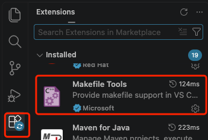

Development Environment Setup¶
The reference environment used for this course is GNU/Linux, specifically Debian 13 trixie.
If you use GNU/Linux, regardless of the distribution, we assume you are able to configure the environment yourself.
For Windows and macOS (arm64, Apple Silicon) users, we recommend using VMware to set up a virtual machine, together with SSH remote development in VS Code or IntelliJ IDEA.
We also provide the following lighter-weight options that do not require a virtual machine. However, we do not provide troubleshooting or technical support for them.
- Windows WSL
- Native macOS environment
Setting Up the Development Environment¶
Using a VMware Virtual Machine¶
We recommend VMware as the virtualization software. VMware installers are available at https://dl.cra.moe/CS323-Compilers-2025Fall/.
Note
VMware Workstation (for Windows) and VMware Fusion (for macOS) are free for personal use. You do not need to use unofficial cracked versions.
After installing VMware, you have two options:
-
Import our preconfigured virtual environment.
Windows users should download the OVF archive, extract it, and drag the
.ovffile into VMware.macOS users should select the archive that includes arm64, extract it, and drag the
.vmwarevmfile into VMware's virtual machine list. You may refer to the screenshots at https://yuk1i.github.io/os-next-docs/env/vm/macos/.Note
In the preconfigured VMware image, the password for
rootis123456, and the password for the regular usercs323is also123456. -
Install a Linux virtual machine from scratch. Please install Debian 13; installation images are available from the SUSTech mirror at https://mirrors.sustech.edu.cn/. Then install the following packages:
If the console reports thatllvm-19andclang-19cannot be found, try the following commands:
wget -O - https://apt.llvm.org/llvm-snapshot.gpg.key | sudo apt-key add -
sudo add-apt-repository "deb http://apt.llvm.org/$(lsb_release -cs)/ llvm-toolchain-$(lsb_release -cs)-19 main"
sudo apt update
sudo apt install clang-19 llvm-19
Windows WSL2 Setup¶
See Windows WSL Setup.
Native macOS Development Environment Setup¶
See Native macOS Setup.
Setting Up Development Tools¶
We recommend setting up SSH remote development with VS Code or IntelliJ IDEA in advance, or developing with WSL.
This section provides two ways to configure VS Code:
- Remote development (recommended): connect to the course virtual machine with VS Code Remote SSH. This is suitable for students using VMware.
- Local development for the early labs (temporary option): if you cannot install or start the virtual machine yet, you can complete the early labs directly on Windows or macOS.
The early labs only require Git, JDK 21, and Make. You do not need to prepare the complete compiler toolchain first. When later labs require tools such as LLVM, moving to the course virtual machine is still recommended.
Remote Development with VS Code¶
The following instructions use VS Code + Remote SSH to configure a remote development environment.
Install the SSH Extension for VS Code¶

Follow the screenshot above to install the extension:
- Click Extensions in the left sidebar.
- Enter
sshin the search bar. - Find Microsoft's official Remote - SSH extension.
- Click Install.
- After installation, the remote connection icon marked 5 in the screenshot should appear in the left sidebar.
Cannot Find the Remote SSH Icon?
If the icon does not appear in the left sidebar after installation, try closing and reopening VS Code.
Obtain the Virtual Machine IP Address¶
Before configuring VS Code, you first need the IP address of your virtual machine.
Open the virtual machine again and log in with the default account:
| Item | Value |
|---|---|
| Username | cs323 |
| Password | 123456 |
After entering the virtual machine desktop, open a terminal as shown below:


Enter the following command in the terminal:
The command prints the IP address of the current virtual machine, for example: You will use this address when configuring VS Code later.
Record Your Own IP Address
Every virtual machine may have a different IP address.
The HostName in the later configuration must be the address returned by your own hostname -I command. Do not copy the example address directly.
Configure VS Code Remote SSH¶
After obtaining the virtual machine IP address, return to VS Code.
Open the SSH configuration file as shown below:

VS Code may offer several SSH configuration files. Usually, selecting the first one is sufficient.
Add the following to the configuration file:
| Setting | Meaning |
|---|---|
Host |
The name shown for the remote connection in VS Code |
HostName |
The IP address of the virtual machine |
User |
The username used to log in to the virtual machine |
Do Not Copy the Example IP Address
The address below:
is only an example.
Replace HostName with your own virtual machine IP address.
For example, if hostname -I returned:
your configuration should be:
Connect to the Virtual Machine¶
After saving the SSH configuration file, return to Remote Explorer in VS Code.
You should now see a new remote host:
Click its connection button to connect to the virtual machine.On the first connection, VS Code may ask you to choose the remote server's operating system. Select:
It may then ask for the SSH login password. The default password is:A Security Prompt May Appear on the First Connection
When connecting to the virtual machine for the first time, SSH may ask whether you trust the host.
If you see a prompt like:
choose Continue. After a successful connection, VS Code usually shows the following in its bottom-left corner:
This means VS Code has successfully connected to the virtual machine.Connection Successful
When SSH: cs323 appears in the bottom-left corner of VS Code, the remote development environment is ready.
You can then open the code directory in the virtual machine with VS Code, and write, compile, run, and debug code in the virtual machine environment.
Install the Java Development Extension¶
Later labs will primarily use Java, so you also need to install Java development extensions for VS Code.
The procedure is largely the same as installing Remote - SSH:
- First confirm that VS Code is connected to the virtual machine. The bottom-left corner should display:
The Extension Must Be Installed in the Remote Virtual Machine
The Java extensions must be installed in the SSH: cs323 remote environment, not only on your local computer.
Java projects, the JDK, and the runtime environment for later labs are all located in the virtual machine. Therefore, code completion, navigation, compilation, execution, and debugging must also run in the remote environment.
When installing, make sure the button says:
rather than the standard:What Is Extension Pack for Java?
Extension Pack for Java is a collection of Java development extensions.
After installation, VS Code automatically installs a set of commonly used Java development extensions, including support for code completion, navigation, running, debugging, testing, and Maven projects.
Therefore, you only need to install this extension pack instead of installing each included extension separately.
Once installed, VS Code has the basic features required for Java development in the virtual machine.
Temporarily Complete the Early Labs Locally¶
A fallback when the virtual machine is unavailable
You do not need to install WSL or prepare a complete Linux environment for this option. If Java and Make run locally, you can start the early course work. The recommended environment remains a virtual machine with Remote SSH.
Check the Required Tools¶
Run the following commands in the VS Code terminal:
Continue configuring the editor after all three commands print version information. JDK 21 is recommended for Java.If Git or Make is missing on macOS, install the Xcode command-line tools:
Windows users can install Git, JDK 21, and Make directly. Make can be installed through MinGW-w64 or Chocolatey. The MinGW executable may be namedmingw32-make; if so, replace make in later commands with that name.
Install the Java Development Extensions¶
Open Extensions in the VS Code left sidebar, then find and install Microsoft's Extension Pack for Java. After installation and once the Java language service has started, the VS Code status bar will indicate that Java is ready.

Configure the Course Java Project¶
The course project provides its JAR dependencies in the libs directory. Create .vscode/settings.json in the project root:
{
"java.project.sourcePaths": ["src/main/java"],
"java.project.referencedLibraries": [
"libs/**/*.jar"
],
"java.project.outputPath": "bin"
}
Then, open the Command Palette again, enter and run Debug: Add Configuration, select Java, and generate .vscode/launch.json. Replace its contents with the following configuration:
{
"version": "0.2.0",
"configurations": [
{
"type": "java",
"name": "Launch Current File",
"request": "launch",
"mainClass": "${file}",
"classPaths": [
"libs/*",
"bin"
]
}
]
}
-
${file}: A built-in variable that automatically runs the Java file currently open in the editor that contains amainmethod, so you do not need to create a separate configuration for each file. -
classPaths: The runtime classpath, including the dependency JAR files and the compilation output directory.
You can also create these two files directly. They should be located in the root directory of the project:

Save the file, open the command palette, and run Developer: Reload Window. If Referenced Libraries appears in the VS Code JAVA PROJECTS view, the JAR files have been detected.
The Java extensions can directly run the currently open class if it contains a main method. Create .vscode/launch.json through Run and Debug: Add Configuration only when you need to fix the main class, arguments, or environment variables.
Use the Makefile¶
Before running Make, confirm that the terminal is in the project root containing the Makefile:

The available targets are defined by the current project'sMakefile. You can install Microsoft's Makefile Tools extension to view and run Makefile targets in VS Code.

Makefile for Windows¶
Forward-slash paths such as libs/... and src/... in the original Makefile can remain unchanged: GNU Make and Java recognize them on Windows. The Linux commands mkdir -p and rm -rf are the parts that must be replaced.
When using GNU Make from Windows cmd or PowerShell, replace the Makefile in the project root with this version:
ANTLR_JAR := libs/antlr-4.13.2-complete.jar
OUTPUT_DIR := src/main/java/generated
GRAMMARS := $(basename $(wildcard *.g4))
.DEFAULT_GOAL := all
.PHONY: all clean
all: $(GRAMMARS)
$(GRAMMARS): %: $(OUTPUT_DIR)/%Parser.java
$(OUTPUT_DIR)/%Parser.java: %.g4
@if not exist "$(OUTPUT_DIR)" mkdir "$(OUTPUT_DIR)"
@echo Building $(basename $<)
java -jar $(ANTLR_JAR) -visitor -o $(OUTPUT_DIR)/$(basename $<) -package generated.$(basename $<) $<
clean:
@if exist "$(OUTPUT_DIR)" rmdir /S /Q "$(OUTPUT_DIR)"
Recipe lines must start with a Tab
The four lines starting with if, echo, java, and rmdir must begin with a Tab, not spaces. This version uses .DEFAULT_GOAL := all to select the default target; the original .DEFAULT = all does not correctly set GNU Make's default goal.
This version does not include the Maven-based jar target. Build and clean the project with:
make, use make and make clean instead.